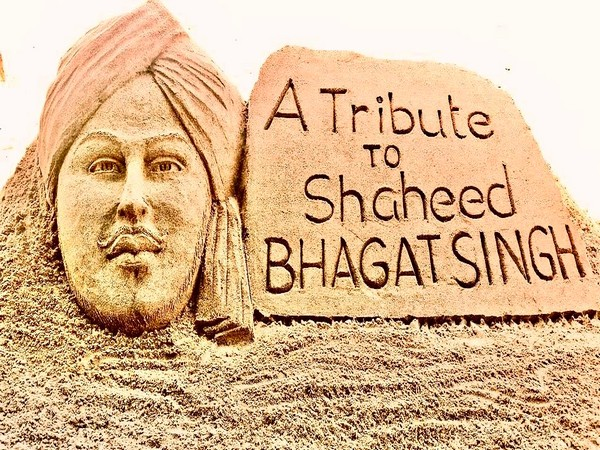

Tribute to Shahid Bhagat Singh
 
Bhagat Singh (1907 – 1931) was one of India’s greatest freedom fighters.
He was born in Banga village, Punjab (now in Pakistan).
Known as “Shaheed Bhagat Singh”, meaning Martyr Bhagat Singh.
Joined the Hindustan Socialist Republican Association (HSRA) to fight British rule.
Protested against the Simon Commission and British injustice.
In 1928, he avenged Lala Lajpat Rai’s death by killing British officer John Saunders.
On 8 April 1929, he and Batukeshwar Dutt threw bombs in the Central Legislative Assembly shouting “Inquilab Zindabad!”
Tributes to Bhagat Singh are paid to him as a revolutionary freedom fighter, often on his birth anniversary (September 28) or Martyrdom Day (March 23).
These tributes honor his immense courage, sacrifice, and patriotism, which inspired a spirit of freedom in India
He is remembered for his role in the Indian struggle for independence from British rule and his ideals of justice and patriotism, which continue to motivate future generations.